keyboard_arrow_right
keyboard_arrow_left
Personal Art
Practicing an art, no matter how well or badly, is a way
to make your soul grow, for heaven's sake.
-Kurt Vonnegut
to make your soul grow, for heaven's sake.
I started sketching and taking photographs in high school, always with a focus on capturing the thoughts that kept me up at night.
My supportive art teacher encouraged me to study my hobby in college where I experimented with lots of different mediums.
Drawing
I'm always sketching something, usually in my moleskine or on a sticky note.
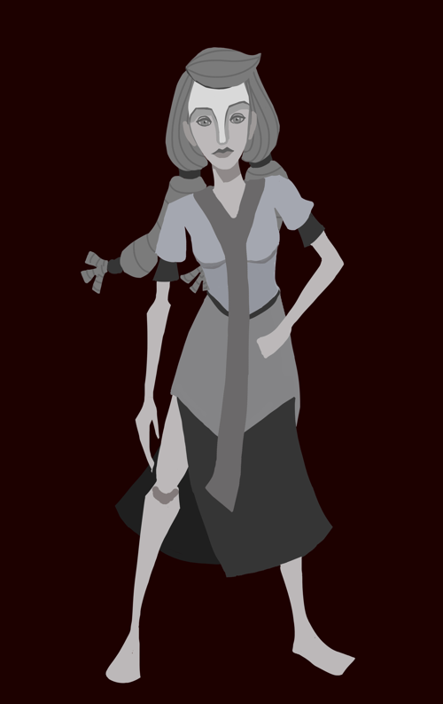
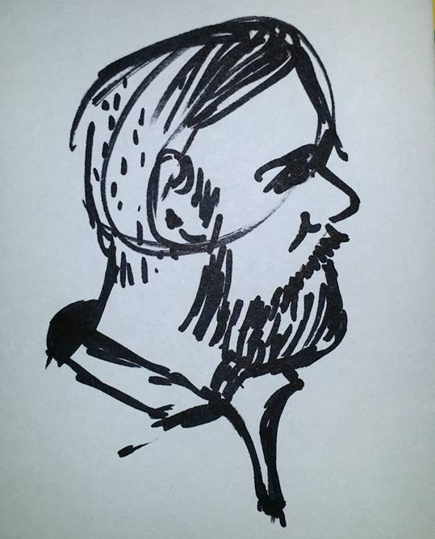
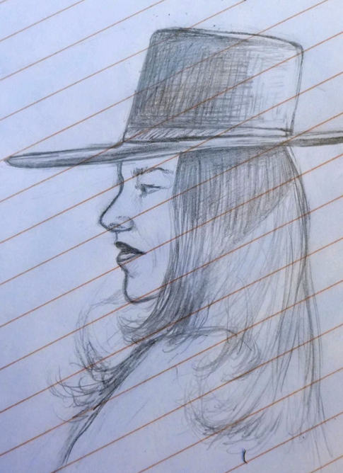
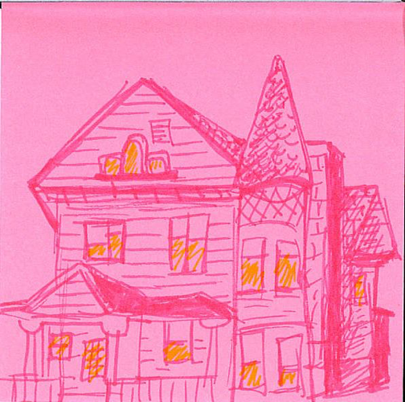
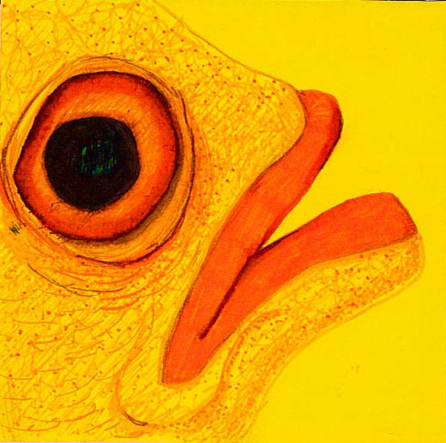
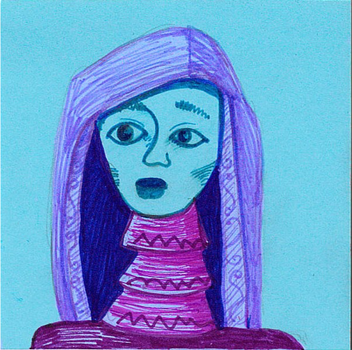
3D Art
I studied 3D modeling, texturing, and animation using Maya and Zbrush.
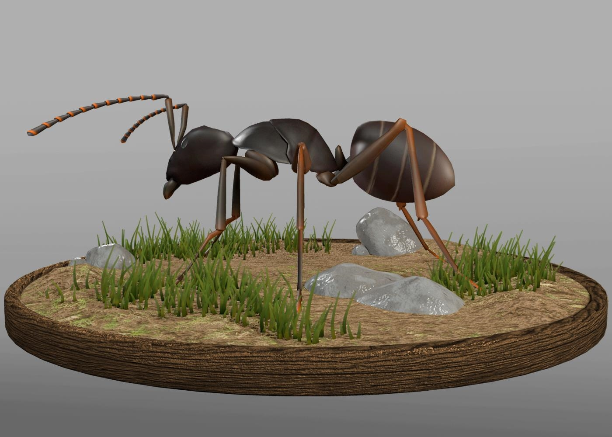
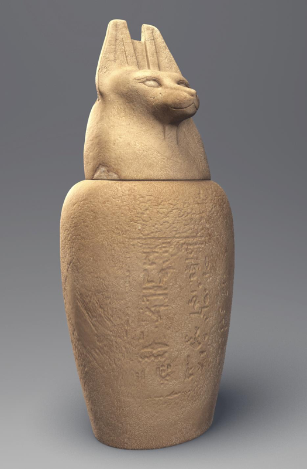
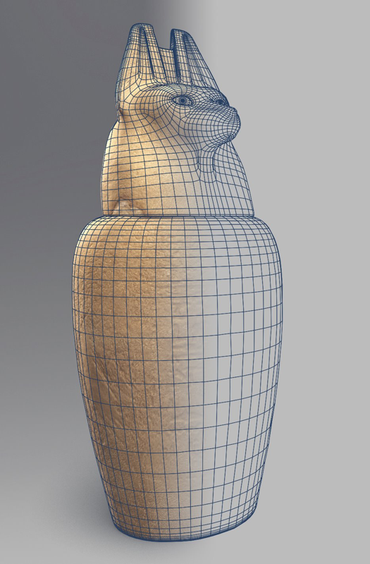
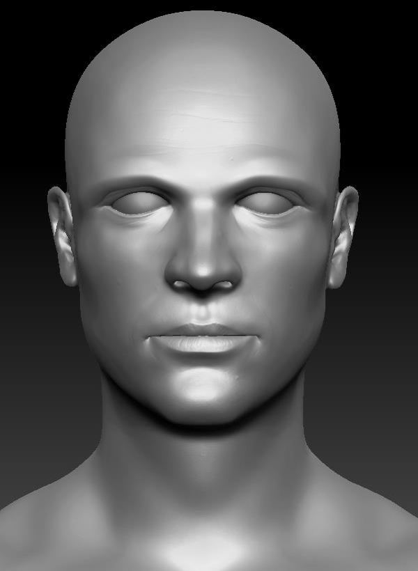
Photography
I was fortunate to study both analog and digital photography at Herron School of Art.
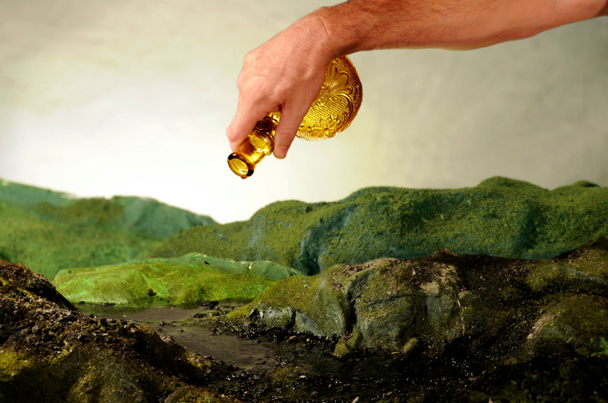
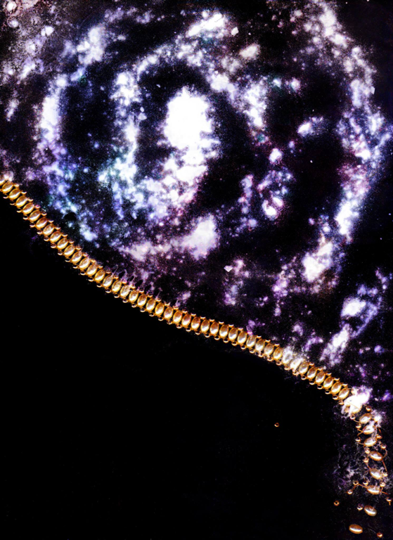
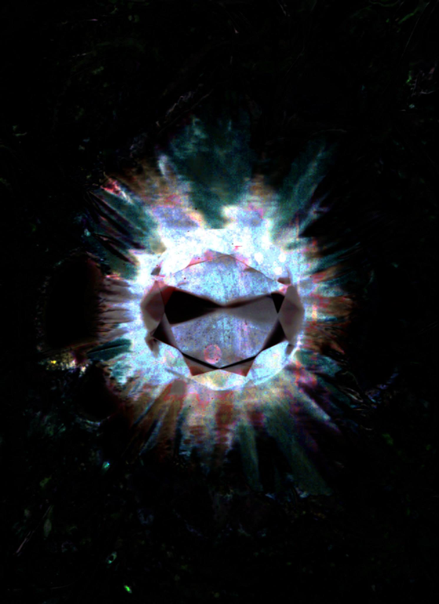
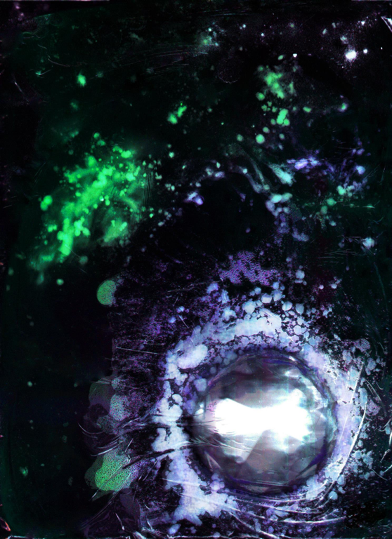
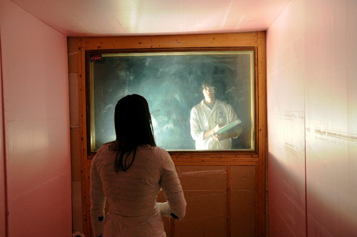